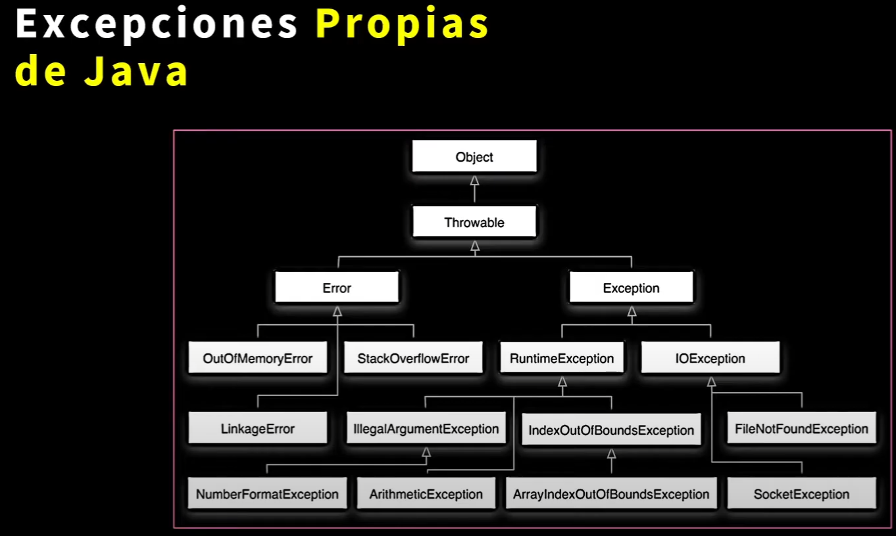

9 Manejo de excepciones.
9.1 Introducción
El manejo de excepciones en Java es una característica fundamental que permite gestionar errores durante la ejecución de un programa, evitando que se interrumpa abruptamente. Las excepciones representan condiciones inusuales o errores que pueden ocurrir, como intentos fallidos de abrir un archivo o la entrada de datos inválidos.
9.2 Conceptos Básicos
9.2.1 ¿Qué es una excepción?
Una excepción es un evento que ocurre durante la ejecución de un programa y que interrumpe el flujo normal de las instrucciones. En Java, todas las excepciones son objetos que heredan de la clase base Throwable.
Muchas clases de errores pueden provocar una excepción, desde un desbordamiento de memoria o un disco duro estropeado, un intento de dividir por cero, o intentar acceder a un vector fuera de sus límites Cuando esto ocurre, java crea un objeto de la clase exceptión
Ejemplo:
public class EjemploExcepciones{
public static void main (String[] args) {
int num1= 2, num2=0;
int result=num1/num2;
System.out.println("El resultado es: " + result);
}
}9.2.2 Excepciones Propias de java
Antes de continuar, se debe conocer que java error y excepción son términos relacionados con problemas que pueden ocurrir durante la ejecución de un programa, pero tienen diferencias importantes en su naturaleza y manejo:
9.2.2.1 Error:
- Un error es un problema grave que ocurre fuera del control del programa y generalmente indica un fallo crítico del sistema o del entorno de ejecución.
Características:
-Representado por la clase Error, que es parte del paquete java.lang.
-No está diseñado para ser manejado por el programa.
En la mayoría de los casos, intentar capturar o recuperar un error es inútil.
Ejemplos comunes incluyen:
-StackOverflowError: Cuando se desborda la pila debido a una recursión excesiva.
-OutOfMemoryError: Cuando la JVM no tiene suficiente memoria para continuar.
Son más relacionados con el entorno de ejecución o la configuración del sistema.
9.2.2.2 Excepción:
Una excepción es un problema que ocurre durante la ejecución del programa debido a errores de lógica o circunstancias excepcionales predecibles.
Representada por la clase Exception, que es una subclase de Throwable, Está diseñada para ser manejada por el programa mediante bloques try-catch o con la cláusula throws.
Se divide en dos tipos:
-Verificadas en tiempo de compilación:
-No Verificadas en tiempo de compilación y suelen deberse a errores de programación:
Todos vienen de la clase throwable como se observa en la siguiente imagen.

9.2.3 Jerarquía de Excepciones
Throwable: Clase base de todas las excepciones y errores.Exception: Errores que pueden ser manejados por el programa.IOException: Relacionadas con operaciones de entrada/salida.SQLException: Errores en bases de datos.FileNotFoundException: Archivo no encontrado.ArithmeticException: Errores matemáticos como división por cero.
Error: Condiciones críticas del sistema, como falta de memoria, que no deben manejarse directamente.
Ejemplos de Errores
StackOverflowError: Este error ocurre cuando un programa utiliza demasiada memoria en la pila debido a una recursión infinita o excesiva.
public class StackOverflowExample {
public static void main(String[] args) {
recursiveMethod(); // Llamada recursiva infinita
}
public static void recursiveMethod() {
recursiveMethod(); // Llamada a sí misma sin condición de salida
}
}- OutOfMemoryError: Este error ocurre cuando la Java virtual machine (JVM) no tiene suficiente memoria para asignar nuevos objetos en el heap.
import java.util.ArrayList;
public class OutOfMemoryExample {
public static void main(String[] args) {
ArrayList<int[]> memoryHog = new ArrayList<>();
while (true) {
memoryHog.add(new int[1_000_000]); // Intenta llenar el heap
}
}
}9.2.4 Ejemplo de Excepciones
Uso de
throwEjemplo lanzando una excepción
import java.io.FileReader;
public class Throws {
public static void main(String[] args) {
FileReader archivo = new FileReader("archivo_inexistente.txt"); // Puede lanzar FileNotFoundException
System.out.println("Archivo abierto con éxito.");
}
}saldrá el siguiente mensaje: Exception in thread “main” java.lang.RuntimeException: Uncompilable code - unreported exception java.io.FileNotFoundException; must be caught or declared to be thrown at exepciones.Exepciones.main(
Español: Excepción en el hilo “main” java.lang.RuntimeException: Código no compilable - excepción no reportada java.io.FileNotFoundException; debe ser capturada o declarada para lanzarse en exepciones.Exepciones.main(
Ejemplo: Si ahora sólo lanzaramos la excepción con la palabra throws obtendríamos el siguiente mensaje.
import java.io.FileNotFoundException;
import java.io.FileReader;
public class Exepciones {
public static void main(String[] args) throws FileNotFoundException {
FileReader archivo = new FileReader("archivo_inexistente.txt"); // Puede lanzar FileNotFoundException
System.out.println("Archivo abierto con éxito.");
}
}import java.io.FileNotFoundException;
import java.io.FileReader;
import java.io.BufferedReader;
import java.io.IOException;
public class Main {
public static void main(String[] args) throws FileNotFoundException, IOException {
// Intentar abrir el archivo
FileReader archivo = new FileReader("archivo_inexistente.txt");
BufferedReader bufferedReader = new BufferedReader(archivo);
// Leer el archivo línea por línea
String linea;
while ((linea = bufferedReader.readLine()) != null) {
System.out.println(linea); // Imprime cada línea
}
System.out.println("Archivo abierto con éxito.");
// Cerrar los recursos
bufferedReader.close();
archivo.close();
}
}Exception in thread “main” java.io.FileNotFoundException: archivo_inexistente.txt (El sistema no puede encontrar el archivo especificado).
9.2.5 Ejemplo de Excepciones Manejando TRY-CATCH-FINALLY
El manejo de excepciones en Java se realiza utilizando los bloques try, catch, finally, y throw. Estos permiten controlar el flujo del programa y tomar acciones específicas cuando ocurre una excepción.
try: Se utiliza para envolver el código que podría generar una excepción.catch: Captura la excepción y permite tomar medidas para manejarla.finally: Es un bloque opcional que se ejecuta después deltryycatch, sin importar si se lanzó una excepción o no. Se usa generalmente para liberar recursos.throw: Permite lanzar una excepción de manera manual.
Uso de try y catch
Ejemplo básico:
public class EjemploExcepciones {
public static void main(String[] args) {
try {
int resultado = 10 / 0; // Esto genera una ArithmeticException
} catch (ArithmeticException e) {
System.out.println("Error: División por cero.");
} finally {
System.out.println("Operación finalizada.");
}
}
}Sin excepción
public class EjemploExcepciones{
public static void main (String[] args) {
int num1= 2, num2=0;
int result=num1/num2;
System.out.println("El resultado es: " + result);
}
}9.2.6 Captura de Múltiples Excepciones:
En Java, es posible capturar múltiples excepciones en un mismo bloque try-catch, lo que facilita el manejo de diferentes tipos de errores en una misma sección de código. Desde Java 7, también se permite combinar varias excepciones en un solo bloque catch usando el operador |.
import java.util.Scanner;
public class Main {
public static void main(String[] args) {
Scanner scanner = new Scanner(System.in);
try {
System.out.print("Ingrese el numerador: ");
int numerador = scanner.nextInt();
System.out.print("Ingrese el denominador: ");
int denominador = scanner.nextInt();
int resultado = numerador / denominador;
System.out.println("Resultado: " + resultado);
} catch (ArithmeticException e) {
System.out.println("Error: El denominador no puede ser 0. Inténtalo de nuevo con un valor distinto.");
} catch (java.util.InputMismatchException e) { // java.util.InputMismatchExceptio se lanza cuando se intenta leer un tipo de dato que no coincide con el tipo esperado.
System.out.println("Error: Entrada inválida. Solo se permiten números enteros.");
}
}
}Que pasaría ahora si se lanzara dentro de un bucle ejemplo while, para que se repita, si el usuario coloca mál el dato seguirá repitiendo la solicitud hasta tener datos correctos.
import java.util.Scanner;
public class Main {
public static void main(String[] args) {
Scanner scanner = new Scanner(System.in);
boolean entradaValida = false; // Bandera para controlar el bucle
while (!entradaValida) {
try {
System.out.print("Ingrese el numerador: ");
int numerador = scanner.nextInt();
System.out.print("Ingrese el denominador: ");
int denominador = scanner.nextInt();
if (denominador == 0) {
throw new ArithmeticException("El denominador no puede ser 0.");
}
int resultado = numerador / denominador;
System.out.println("Resultado: " + resultado);
entradaValida = true; // Si llega aquí, las entradas son válidas
} catch (ArithmeticException e) {
System.out.println("Error: " + e.getMessage());
scanner.nextLine(); // Limpiar el buffer de entrada
} catch (java.util.InputMismatchException e) {
System.out.println("Error: Entrada inválida. Solo se permiten números enteros.");
scanner.nextLine(); // Limpiar el buffer de entrada
}
}
scanner.close();
}
}Bloque Finally
El bloque finally se utiliza en Java para ejecutar código que debe correr sin importar si se lanzó o no una excepción. Es útil para liberar recursos, como cerrar un objeto Scanner.
En este caso, podemos usar finally para garantizar que el objeto Scanner se cierre después de que el programa haya terminado de procesar las entradas.
import java.util.Scanner;
public class Main {
public static void main(String[] args) {
Scanner scanner = new Scanner(System.in); // Crear el Scanner
try {
boolean entradaValida = false; // Bandera para controlar el bucle
while (!entradaValida) {
try {
System.out.print("Ingrese el numerador: ");
int numerador = scanner.nextInt();
System.out.print("Ingrese el denominador: ");
int denominador = scanner.nextInt();
if (denominador == 0) {
throw new ArithmeticException("El denominador no puede ser 0.");
}
int resultado = numerador / denominador;
System.out.println("Resultado: " + resultado);
entradaValida = true; // Entrada válida, salir del bucle
} catch (ArithmeticException e) {
System.out.println("Error: " + e.getMessage());
scanner.nextLine(); // Limpiar el buffer de entrada
} catch (java.util.InputMismatchException e) {
System.out.println("Error: Entrada inválida. Solo se permiten números enteros.");
scanner.nextLine(); // Limpiar el buffer de entrada
}
}
} finally {
scanner.close(); // Garantiza que el recurso Scanner se cierra
System.out.println("Recurso Scanner cerrado.");
}
}
}9.2.7 Diferencias Clave entre los programas anteriores
| Característica | Primer Código (con finally) |
Segundo Código (sin finally) |
|---|---|---|
Uso de finally |
Utiliza el bloque finally para garantizar el cierre del recurso Scanner. |
No usa finally, pero cierra el recurso manualmente al final. |
| Liberación de Recursos | El cierre del Scanner ocurre siempre, incluso si ocurre una excepción. |
El cierre del Scanner depende de que el flujo salga del bucle correctamente. |
| Robustez del Código | Más robusto, ya que garantiza que el Scanner siempre se cierre. |
Menos robusto, podría no cerrar el recurso si ocurre un error inesperado fuera del bucle. |
| Legibilidad | Separa claramente la lógica del cierre de recursos en el bloque finally. |
Agrupa todo en el flujo principal, lo que puede ser más legible en casos simples. |
Video de refuerzo
https://www.youtube.com/watch?v=VHy6xFXJ1Rw